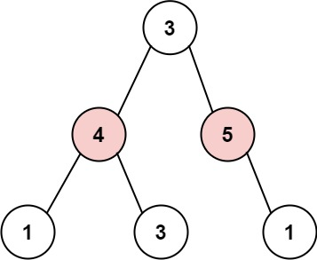

books / company-solutions / Tree
337. 打家劫舍 III
| 题目信息 | 内容 |
|---|---|
| 难度 | 中等 |
| 核心模式 | 树形 DP：后序遍历返回「偷 / 不偷」二元状态 |
| 时间复杂度 | O(n) |
| 空间复杂度 | O(h) |
题目与约束
小偷又发现了一个新的可行窃的地区。这个地区只有一个入口，我们称之为 root 。
除了 root 之外，每栋房子有且只有一个“父“房子与之相连。一番侦察之后，聪明的小偷意识到“这个地方的所有房屋的排列类似于一棵二叉树”。 如果 两个直接相连的房子在同一天晚上被打劫 ，房屋将自动报警。
给定二叉树的 root 。返回 在不触动警报的情况下 ，小偷能够盗取的最高金额 。
示例 1:

输入: root = [3,2,3,null,3,null,1]
输出: 7
解释: 小偷一晚能够盗取的最高金额 3 + 3 + 1 = 7
示例 2:

输入: root = [3,4,5,1,3,null,1]
输出: 9
解释: 小偷一晚能够盗取的最高金额 4 + 5 = 9
提示：
-
树的节点数在
[1, 104]范围内 -
0 <= Node.val <= 104
核心不变量
对每个节点，返回两个值——「偷这个节点时其子树的最大收益」与「不偷这个节点时其子树的最大收益」；父节点的最优决策只依赖子节点这两个值。
完整推导
思路推导
- 相邻父子不能同时偷
这是一条树上的"相邻不共存"约束，天然适合「每个节点做一个 偷 / 不偷 的决策」。树形 DP 的关键是：把子树的答案先算好，再合并到父节点。
- 为什么必须自底向上（后序）
当前节点怎么选，取决于左右子树分别"偷没偷它自己"，所以要先把左右子树的结果拿到手。后序遍历（左→右→根）正好满足。
- 两种状态、两个转移式子
- 设
rob= 偷当前节点：则两个孩子都不能偷，rob = node.val + 左.不偷 + 右.不偷； - 设
notRob= 不偷当前节点：两个孩子各自取「偷/不偷」中的较大者，notRob = max(左.偷, 左.不偷) + max(右.偷, 右.不偷)。
- 小例子（示例 1：
[3,2,3,null,3,null,1]）
节点 3（左子树右孩子，叶子）返回 (3,0)；节点 2 得 rob=2、notRob=3 → (2,3)；右侧节点 3 有右孩子 1，得 (3,1)。根 3：rob = 3 + 3(左不偷) + 1(右不偷) = 7，notRob = max(2,3) + max(3,1) = 6，取 max = 7，与答案一致。
Java 实现（rob）
class Solution {
public int rob(TreeNode root) {
int[] res = dfs(root);
return Math.max(res[0], res[1]);
}
// 返回 int[]{偷当前节点的最大收益, 不偷当前节点的最大收益}
private int[] dfs(TreeNode node) {
if (node == null) {
return new int[]{0, 0}; // 空节点两种状态都是 0
}
int[] left = dfs(node.left);
int[] right = dfs(node.right);
// 偷当前：孩子都不能偷
int robThis = node.val + left[1] + right[1];
// 不偷当前：孩子各自取偷/不偷的较大值
int notRobThis = Math.max(left[0], left[1]) + Math.max(right[0], right[1]);
return new int[]{robThis, notRobThis};
}
}
复杂度
- 时间：O(n)，每个节点只被访问一次，后序合并是常数操作。
- 空间：O(h)，递归栈深度等于树高；最坏链状树为 O(n)，平衡树为 O(log n)。
易错点与扩展（面试高频考点）
- 朴素递归会指数级重复计算：若写成
rob(root) = max(root.val + rob(root.left.left) + ... , rob(root.left) + rob(root.right))，同一个节点会被反复进入，规模退化到接近指数级。正确做法是后序一次返回两个状态（或用HashMap记忆化）。 - 返回值顺序别写反：约定
[0]=偷、[1]=不偷，robThis依赖孩子的[1]（不偷），notRobThis用到两个值取 max，写反结果必错。 - 空节点返回
(0, 0)：这是递归的基准情形，不要遗漏。 node.val可以为 0：不能拿"收益为 0"当空节点或结束标记，判断一律用== null。- 两种解法对比：记忆化搜索（自顶向下）与后序 DP（自底向上）复杂度相同都是 O(n)，但后者不用哈希表、常数更小，面试中更受青睐。
力扣原题
C++ 实现
#include <algorithm>
#include <utility>
class Solution {
public:
int rob(TreeNode* root) {
auto res = dfs(root);
return std::max(res.first, res.second);
}
private:
// 返回 {偷当前节点的最大收益, 不偷当前节点的最大收益}
std::pair<int, int> dfs(TreeNode* node) {
if (node == nullptr) return {0, 0};
auto left = dfs(node->left);
auto right = dfs(node->right);
int robThis = node->val + left.second + right.second; // 偷当前，孩子不偷
int notRobThis = std::max(left.first, left.second)
+ std::max(right.first, right.second); // 不偷当前
return {robThis, notRobThis};
}
};
Python 实现
class Solution:
def rob(self, root: Optional[TreeNode]) -> int:
# 返回 (偷当前节点的最大收益, 不偷当前节点的最大收益)
def dfs(node):
if node is None:
return (0, 0)
l_rob, l_not = dfs(node.left)
r_rob, r_not = dfs(node.right)
rob_this = node.val + l_not + r_not # 偷当前，孩子不偷
not_rob = max(l_rob, l_not) + max(r_rob, r_not) # 不偷当前
return (rob_this, not_rob)
return max(dfs(root))